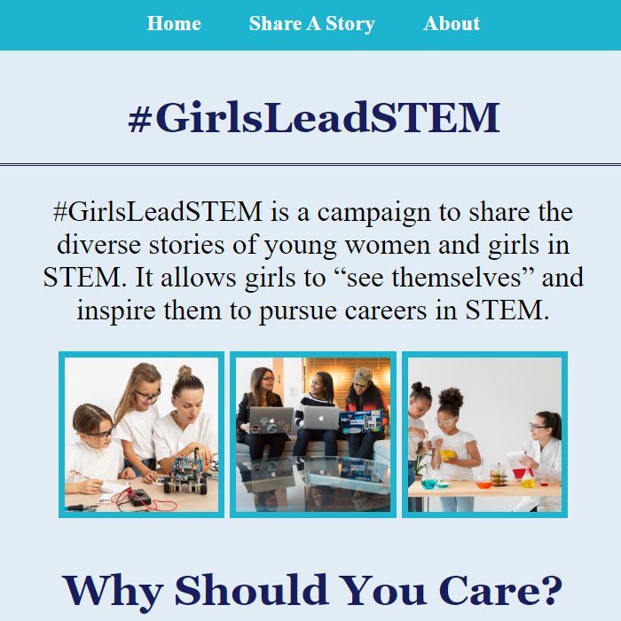
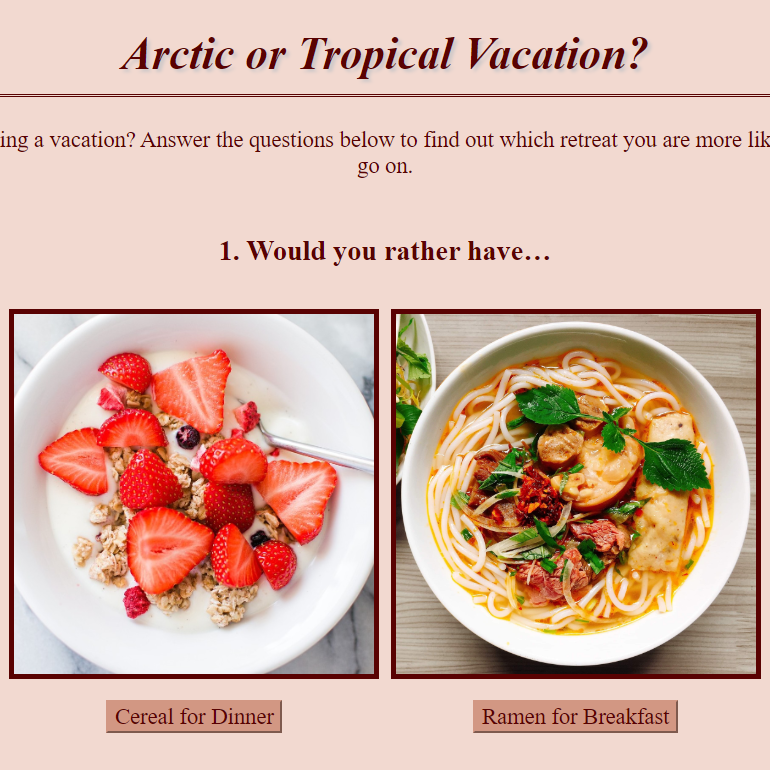
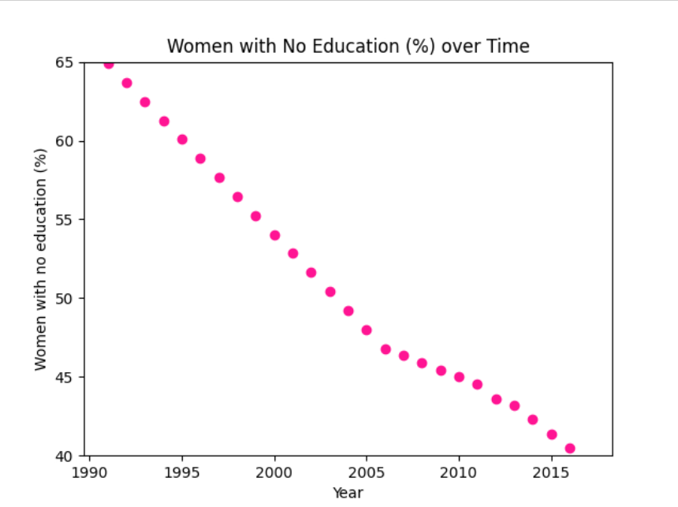
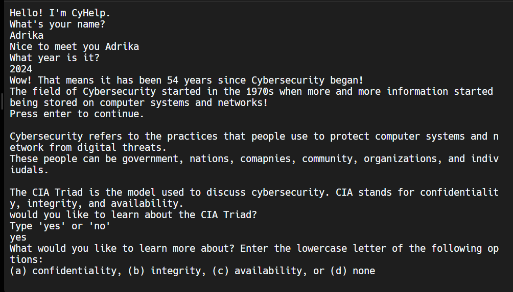
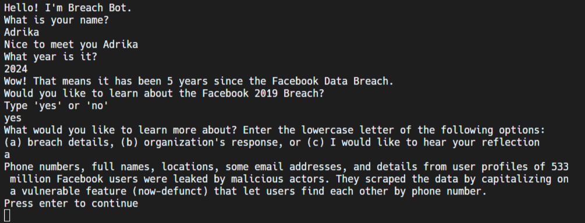
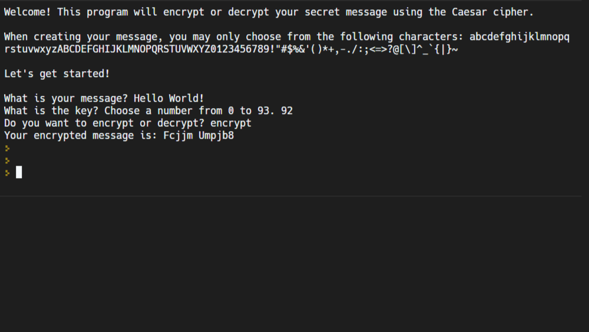

Here are the projects I have worked on:
 I created an activist website to teach others about the organization #GirlsLeadSTEM, the importance of decreasing the gender gap, and sharing women in STEM stories. Check it out here.
 Are you more likely to go on an Arctic or Tropical vacation? Take this personality quiz to find out!
 I used csv data to create a scatter plot to show the percentage of women with no education over time in Pakistan. My proposed research question is: What are the positive effects of women receiving an education in Pakistan that can encourage the government to spend more of its funding?
 I created a chatbot in Python to teach others about the CIA triad.
 I created this breachbot to teach others about the Facebook data breach in 2019.
 I also created an ecrypter/decrypter using the Caesar cipher.
During a Web Development Workshop, I created a website featuring one of my role models. You can check it out here! My Role Model